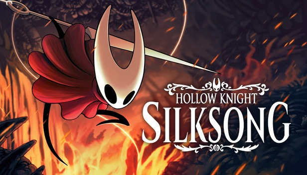

GTA VI será o maior jogo já lançado?
Postado 04 junho 2024
GTA VI é o jogo mais importante da história, segundo analista. Em entrevista recente ao GamesIndustry.biz, Mat Piscatella, famoso analista, afirmou que GTA 6 é o jogo "mais importante da indústria". "Teremos um lote renovado de interesse com GTA 6 em particular.
Leia MaisHallow Knight SilkSong segue sem data de lançamento.
Postado 03 junho 2024 Hollow Knight: Silksong é um futuro jogo de ação e aventura metroidvania desenvolvido e publicado pela Team Cherry para Windows, macOS, Linux, Nintendo Switch, Xbox One, Xbox Series X/S, PlayStation 4, e PlayStation 5. Foi anunciado em fevereiro de 2019 como uma sequência do jogo Hollow Knight, de 2017. O game segue sem data de lançamento definida.
Leia Mais